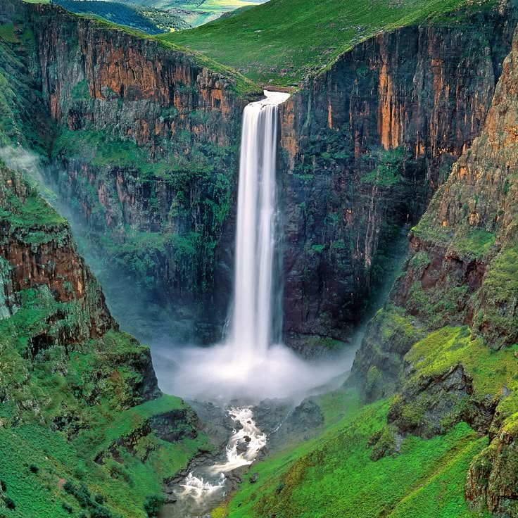
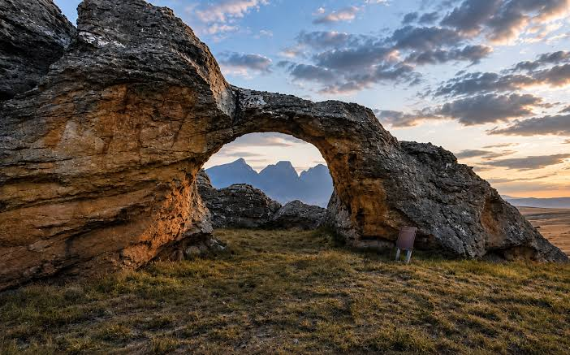
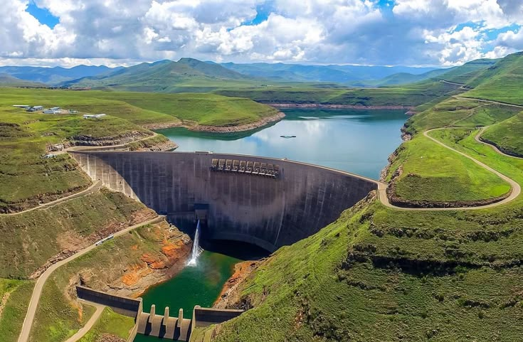
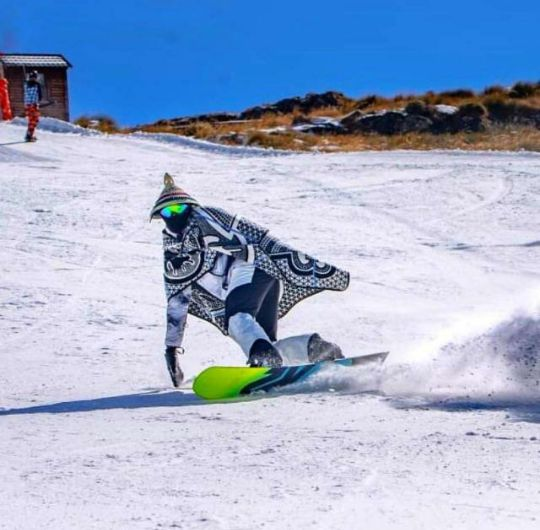
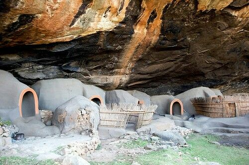

Maletsunyane Falls
Experience the spectacular Maletsunyane Falls, one of Lesotho's most famous natural attractions. Enjoy the scenery and outdoor adventures around Semonkong.
Discover the beautiful landscapes, historical places and exciting adventures that make Lesotho special.

Experience the spectacular Maletsunyane Falls, one of Lesotho's most famous natural attractions. Enjoy the scenery and outdoor adventures around Semonkong.

Explore beautiful landscapes, unique rock formations and natural scenery in one of Lesotho's protected areas. It is a wonderful destination for nature lovers.

Visit the impressive Katse Dam, surrounded by the high mountains of Lesotho. Discover its beautiful views and importance to the Lesotho Highlands Water Project.

Learn about the history of Basotho nation-building at Thaba-Bosiu, the mountain fortress associated with King Moshoeshoe I.

Enjoy mountain activities and seasonal snow experiences at this high-altitude resort in the Maluti Mountains. It is a popular destination for adventure seekers.

Discover the natural and cultural heritage of Liphofung, known for its rock shelter and San rock art. It offers visitors a glimpse into the region's past.